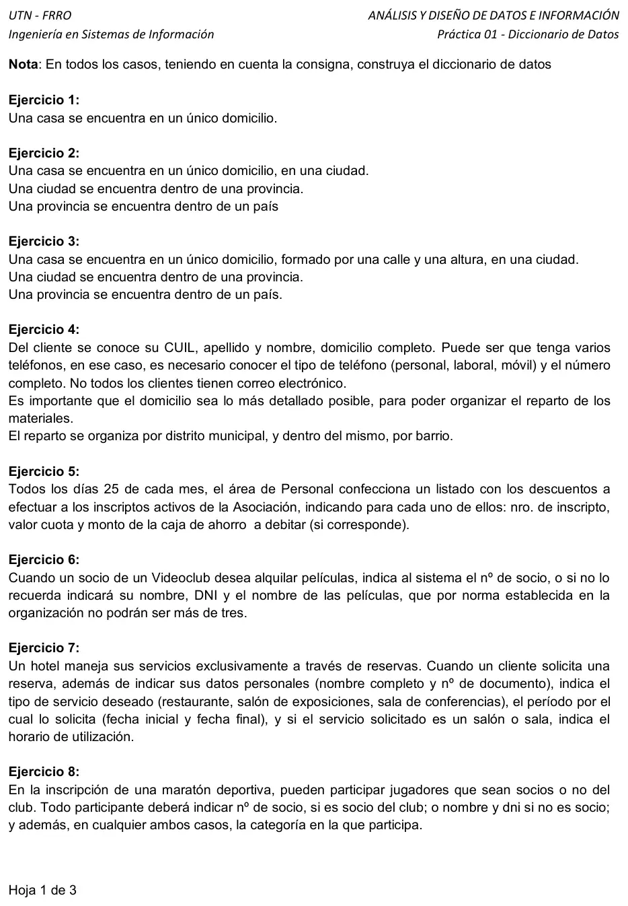

Práctica 01, ejercicios 1 a 8: casos simples
Prácticas
Enunciado


Propuesta de respuesta
Respuesta no verificada. La propuso Luta Studios con inteligencia artificial y ningún docente la revisó. Puede tener errores.
Uso la notación de la clase 1. e: marca un flujo de entrada y s: uno de salida, (e) una estructura, y después del ; van el tipo y los valores de un elemento discreto.
Ejercicio 1. Sin más detalle, el domicilio es un solo elemento. La clase lo dice así, domicilio puede ser un elemento si no interesa más detalle.
casa(e) = domicilio
domicilio = char(60)Ejercicio 2. Cada «se encuentra dentro de» es una estructura dentro de otra.
casa(e) = domicilio + ciudad(e)
ciudad(e) = nombreCiudad + provincia(e)
provincia(e) = nombreProvincia + nombrePaísEjercicio 3. Ahora el domicilio tiene partes, así que pasa a ser una estructura. La ciudad y la provincia quedan como en el 2.
casa(e) = domicilio(e) + ciudad(e)
domicilio(e) = calle + altura
ciudad(e) = nombreCiudad + provincia(e)
provincia(e) = nombreProvincia + nombrePaís
altura = num(5)Ejercicio 4.
cliente(e) = cuil + apellido + nombre + domicilio(e) + 1{teléfono(e)}n + (correoElectrónico)
domicilio(e) = calle + altura + (piso + (depto)) + barrio + distritoMunicipal + localidad + provincia + códigoPostal
teléfono(e) = tipoTeléfono + númeroCompleto(e)
númeroCompleto(e) = códigoÁrea + númeroLínea
tipoTeléfono = char(8); [personal | laboral | móvil]
cuil = num(11)- El correo va entre paréntesis porque no todos los clientes lo tienen.
barrioydistritoMunicipalvan en el domicilio porque el reparto se organiza por los dos.pisoydeptosiguen el ejemplo de la clase, el depto solo si hay piso.cuilse guarda sin guiones y se ingresa con la máscara00-00000000-0, como el CUIT/CUIL de la clase 5. La máscara se documenta en el diccionario.
Ejercicio 5. Es un flujo de salida, con frecuencia mensual (el día 25) y destino el área de Personal.
s: listadoDescuentos = fechaListado + 1{nroInscripto + valorCuota + (montoCajaAhorro)}nmontoCajaAhorrova entre paréntesis porque se debita solo si corresponde.- Que entren solo los inscriptos activos es un criterio del listado, no un dato.
Ejercicio 6.
e: pedidoAlquiler = [nroSocio | nombreSocio + dni] + 1{nombrePelícula}3- Los corchetes dicen que va uno solo de los dos, el número de socio o el nombre con el DNI. Las películas van en los dos casos.
1{...}3pone el tope de la norma, de una a tres películas.
Ejercicio 7.
e: solicitudReserva = datosCliente(e) + tipoServicio + período(e) + (horarioUtilización(e))
datosCliente(e) = nombreCompleto + nroDocumento
período(e) = fechaInicial + fechaFinal
horarioUtilización(e) = horaDesde + horaHasta
tipoServicio = char(25); [restaurante | salón de exposiciones | sala de conferencias]El horario va entre paréntesis y su criterio de validación es que se pide solo si tipoServicio es salón de exposiciones o sala de conferencias.
Ejercicio 8.
e: inscripciónMaratón = [nroSocio | nombre + dni] + categoría
categoría = char(20); discreto, con los valores que defina el clubEs el mismo corchete del ejercicio 6. La categoría va en los dos casos, por eso queda afuera del corchete.
Respuesta no verificada. Puede tener errores.
Se armó con Final, secciones Elementos de datos y Notación, con los ejemplos de la clase 1 (01 - Dato e información, págs. 9 a 15), y Máscaras para el CUIL.
Quedó en duda: En el ejercicio 3 la ciudad puede ir dentro del domicilio o de la casa. La dejé en la casa, como en el 2. En el 4 puse al menos un teléfono. Si hay clientes sin teléfono, va 0{teléfono(e)}n. Los campos del domicilio para el reparto, los tipos y las longitudes son de esta propuesta, el enunciado no los da. La categoría del 8 no trae valores.